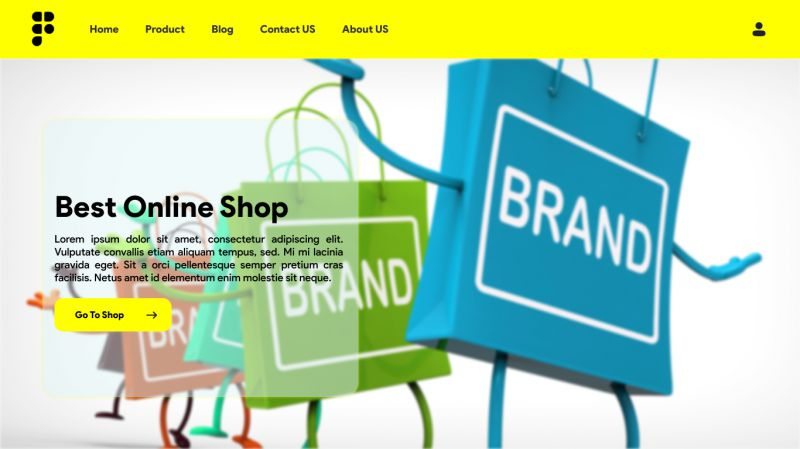

Every year, at this time, blogs like this one like to try and predict what rsquo;s going to happen in the year ahead. It rsquo;s a way of drawing a line under the archive and starting afresh. A rejuvenation that, as humans, we find life-affirming. Ten years ago, I would have had high confidence in these predictions mdash; after all I was eventually right about SVG adoption, even if it took a decade. But the last few years have shown that web design is tightly interwoven with the muggle world, and that world is anything but predictable. So as we look at what might occur in the next year (or five), think of it less as a set of predictions and more as a wishlist. Last Year rsquo;s Predictions When I write this post every January, I like to keep myself honest by glancing back at the previous year rsquo;s predictions to gauge how accurate (or not) my predictions have been. Last year I predicted the long-term trend for minimalism would end, WordPress would decline, cryptocurrency would go mainstream, and then hedged my bets by saying we rsquo;d make both more and fewer video calls. Gradients, maximalism, and the nineties revival pulled us away from minimalism. It rsquo;s still popular, just not as dominant. WordPress is still the biggest CMS in the world and will continue to be for some time. But the relentless grind of no-code site builders at the low end, and being outperformed by better CMS at the high end, mean that WordPress has passed its peak. Over-inflated predictions for BitCoin reaching $100k by December 2021 turned out to be a damp squib. In the end, Bitcoin only tripled in value in 2021. However, with micro-tipping and major tech companies moving into the arena, it rsquo;s clear digital currency arrived in the public consciousness in 2021. And how could I be wrong about more but also fewer video calls? So I rsquo;m calling that my first clean sweep ever. With that heady boast, let rsquo;s take a look at the next twelve months. What Not to Expect in 2022 Do not expect the Metaverse to be significant in anything but marketing speak. Yes, the hardware is slowly becoming more available, but the Metaverse in 2022 is like playing an MMORPG on PS5: theoretically, great fun, until you discover that absolutely none of your friends can get their hands on a console. Ignore the blog posts predicting a noughties-era retro trend. All those writers have done is looked at the nineties-era trend and added a decade. Fashions aren rsquo;t mathematical; they rsquo;re poetic. Retro happens when people find a period that rhymes with present-day hopes and fears. After the last couple of years, if we revisit a decade, it rsquo;s likely to be the late-forties. Finally, don rsquo;t expect seismic change. Material design, parallax scrolling, and jQuery are still with us and are still valid choices under the right circumstances. Trends aren rsquo;t neat; they don rsquo;t start in January and conclude in December.

5 Web Design Predictions for 2022
Predictions tend to be self-fulfilling. So we rsquo;ve limited ourselves to five trends that we believe are either positive or, at worst harmless. Of course, there are no guarantees, but if these come to pass, we rsquo;ll be in good shape for 2023.
1. The Blockchain is Coming
Underpinning the cryptocurrency industry are blockchains. In simple terms, they rsquo;re a set of data that can be appended to but can rsquo;t be edited or deleted. Think of it as version control for data. As with most technology, the first wave has been a way to make a fast buck. However, the exciting development is blockchain technology itself and the transformative nature of the approach. For example, M eacute;decins Sans Fronti egrave;res reportedly stores refugees rsquo; medical records on the blockchain. Imagine the Internet as a set of data, editable for a micro-fee, and freely accessed by anyone anywhere. Instead of millions of sites, a single, secure, autonomous source of truth. Someone somewhere rsquo;s working on it.
2. Positivity Playfulness A11y
Even before world events descended into an endless tirade of grim news, time was running out for dull, corporate, geometric sans-serif design. We added gradients, we added personality, we embraced humor. And contrary to the established business logic, we still make money. Over the past few years, there have been extraordinary efforts by designers and developers to examine, test, and champion accessibility, and thanks to them, inclusive design is no longer reliant on the lowest common denominator. In 2022 you can get experimental without obstructing 10% of your users.
3. Everything Green
Green is a fascinating color, the primary that isn rsquo;t (except in RGB, when it is). Green has the same visual weight as blue, is substantially more flexible, and yet to date, has been radically underutilized in digital design. Green has a prominent cultural association with the environment. At a time when tech companies are desperate to emphasize their ethical credentials, marketing companies will inevitably begin promoting a brand color shift to green as a quick fix for all those dumped chemicals, strip mines, and plastic-filled seas. We rsquo;ve already seen earthy hues acquire popular appeal. At the other end of the vibrancy scale, neons are popular. Green spans both approaches with everything from calm sages to acidic neons. In 2022, if you rsquo;re looking for a color to capture the moment, look to green.
4. Hero Text
A picture is supposed to be worth 1000 words, although I rsquo;m not sure anyone has actually tried to measure it. The problem is that sites increasingly rely on stock images, so the 1000 words that we rsquo;re getting may or may not accurately reflect 100% of our message. In 2022, a handful of well-chosen words will be worth more than an image, with hero images taking a back seat to large hero text. This is aided by a number of minor trends, the most notable of which is the willingness of businesses to look beyond the geometric sans-serif to a more expressive form of typography. Reading through the prediction posts on sites other than this, almost everyone agrees on large hero text replacing images, which virtually guarantees it won rsquo;t happen. Still, at the start of 2022, this seems to be the direction we rsquo;re taking.
5. Bring the Noise
One of the unexpected consequences of the past couple of years has been a renewed connection with nature. The effortless complexity in nature is endlessly engaging. We rsquo;ve already begun to popularise gradients mdash; there are no flat colors in nature mdash; and the next logical step is the addition of noise. In visual terms, noise is the grainy texture that sits so beautifully in vector illustrations. Noise has dipped in and out of trends for years, hampered a little by the leap in file size it creates. However, with WebP and Avif file types, noise is now usable on production sites. Designing in 2022, when in doubt, throw some noise at it.